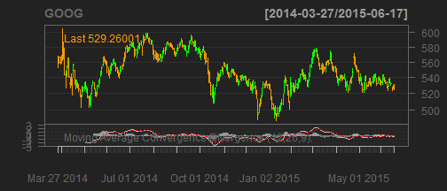

Name of my application: stockVis app
Its created from tutorial 6 on shiny.rstudio.com
Three pages are created for technical analysis of different stocks
Last page creates optimal portfolio using PortfolioAnalytics package
Stock chart with different layout settings and some technical indicators are possible for every stock on yahoo.finance.com. Lets look on Google example!!
## [1] "GOOG"

Last page is devoted to simple portfolio optimiser of three stocks. Different constraints and number of simulations can be choosen by user. The portfolio optimiser use past performance in selected date range of three selected stock. Ouptut is figure with mean-variance chart and weights for selected stock of optimal portfolio and closest neighbors.